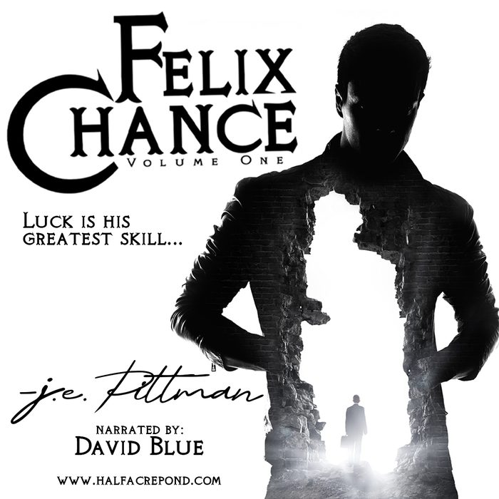

Felix Chance
Volume One
A moose walks into a bar, Bigfoot’s drunk it dry. And that fox over there? It’s not.
Mystery hounds his steps as he unlocks his secret past and seeks the love he left behind. What’s real? What’s not? Felix knows, more than he’ll ever tell.

Volume One is also an audiobook, on Audible, Apple, Google and most places you listen. Where to listen